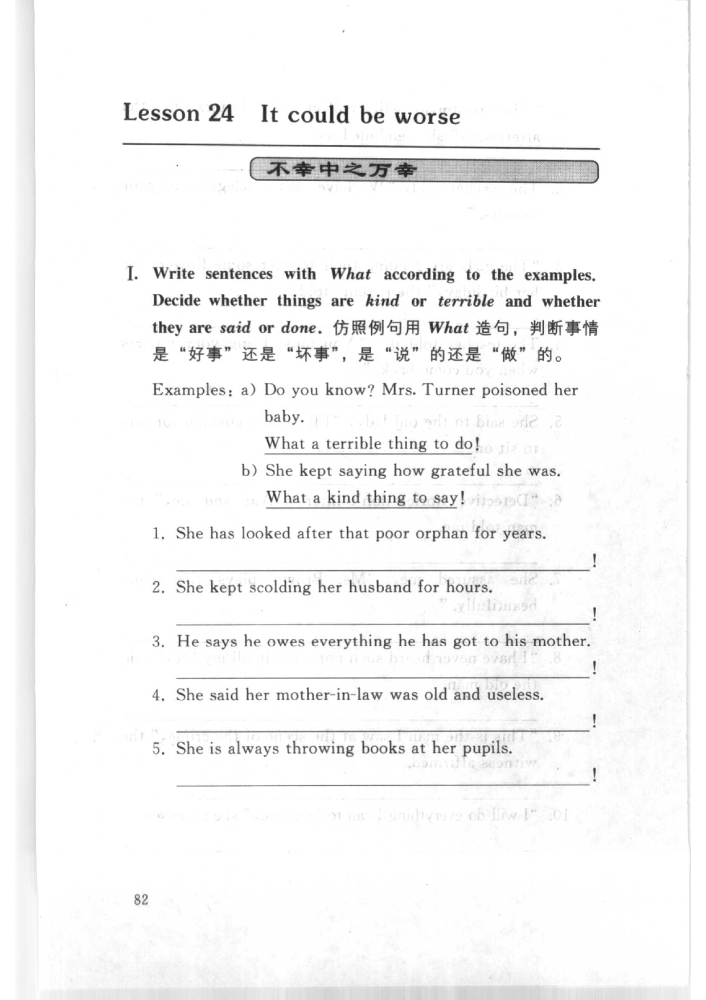
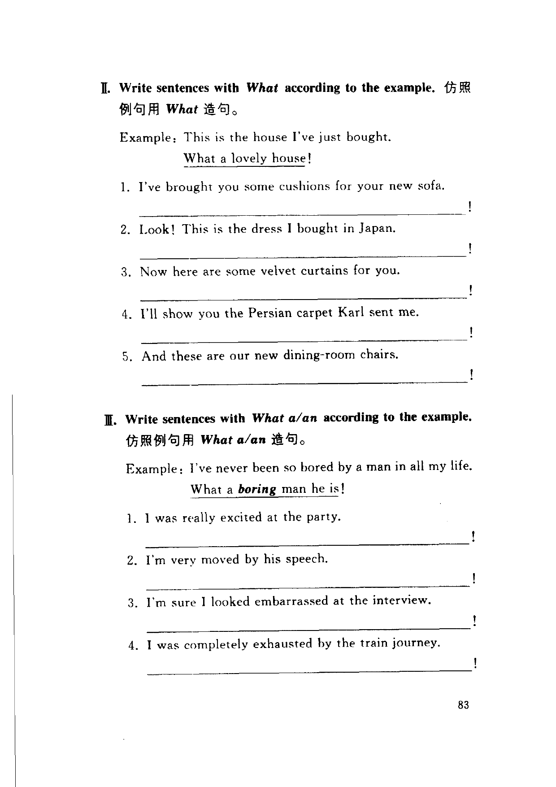
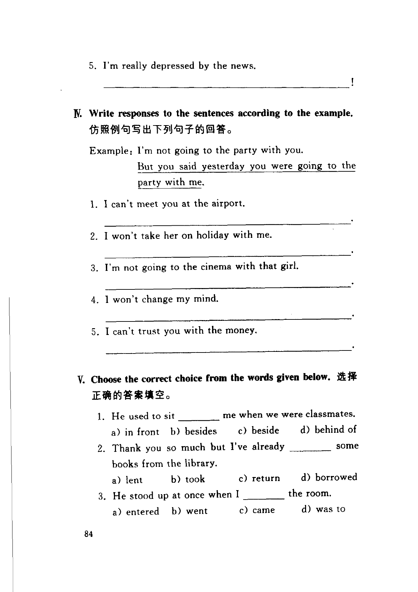
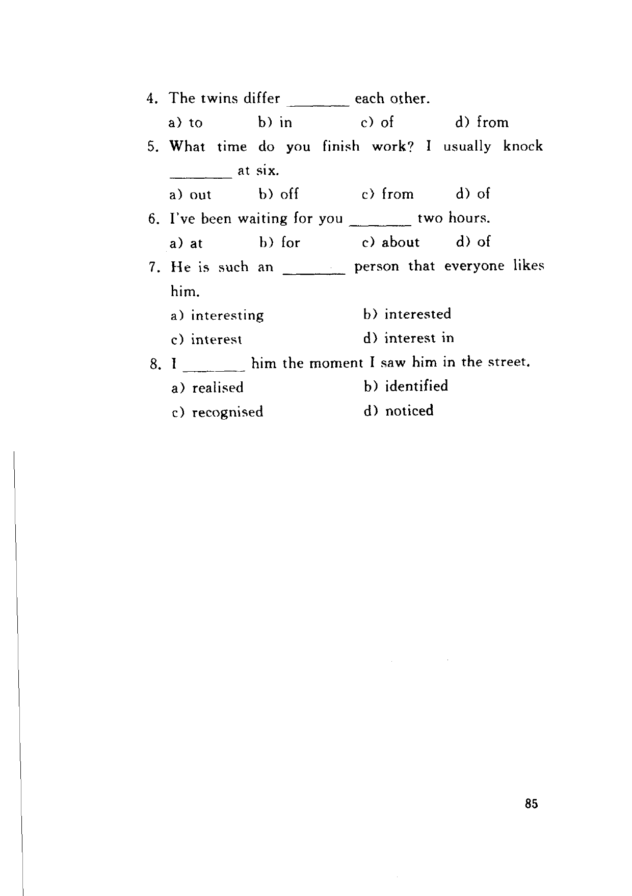

Grammar exercises · 语法练习
I. Write sentences with What according to the examples. Decide whether things are kind or terrible and whether they are said or done.
仿照例句用 What 造句，判断事情是"好事"还是"坏事"，是"说"的还是"做"的。
Examples:
a) Do you know? Mrs. Turner poisoned her baby.
What a terrible thing to do!
b) She kept saying how grateful she was.
What a kind thing to say!
-
I. What — She has looked after that poor orphan for years.
-
I. What — She kept scolding her husband for hours.
-
I. What — He says he owes everything he has got to his mother.
-
I. What — She said her mother-in-law was old and useless.
-
I. What — She is always throwing books at her pupils.
II. Write sentences with What according to the example.
仿照例句用 What 造句。
Example: This is the house I've just bought.
What a lovely house!
-
II. What — I've brought you some cushions for your new sofa.
-
II. What — Look! This is the dress I bought in Japan.
-
II. What — Now here are some velvet curtains for you.
-
II. What — I'll show you the Persian carpet Karl sent me.
-
II. What — And these are our new dining-room chairs.
III. Write sentences with What a/an according to the example.
仿照例句用 What a/an 造句。
Example: I've never been so bored by a man in all my life.
What a boring man he is!
-
III. What a/an — I was really excited at the party.
-
III. What a/an — I'm very moved by his speech.
-
III. What a/an — I'm sure I looked embarrassed at the interview.
-
III. What a/an — I was completely exhausted by the train journey.
-
III. What a/an — I'm really depressed by the news.
IV. Write responses to the sentences according to the example.
仿照例句写出下列句子的回答。
Example: I'm not going to the party with you.
But you said yesterday you were going to the party with me.
-
IV. Responses — I can't meet you at the airport.
-
IV. Responses — I won't take her on holiday with me.
-
IV. Responses — I'm not going to the cinema with that girl.
-
IV. Responses — I won't change my mind.
-
IV. Responses — I can't trust you with the money.
V. Choose the correct choice from the words given below.
选择正确的答案填空。
-
V. Multiple choice — He used to sit me when we were classmates. a) in front b) besides c) beside d) behind of
-
V. Multiple choice — Thank you so much but I've already some books from the library. a) lent b) took c) return d) borrowed
-
V. Multiple choice — He stood up at once when I the room. a) entered b) went c) came d) was to
-
V. Multiple choice — The twins differ each other. a) to b) in c) of d) from
-
V. Multiple choice — What time do you finish work? I usually knock at six. a) out b) off c) from d) of
-
V. Multiple choice — I've been waiting for you two hours. a) at b) for c) about d) of
-
V. Multiple choice — He is such an person that everyone likes him. a) interesting b) interested c) interest d) interest in
-
V. Multiple choice — I him the moment I saw him in the street. a) realised b) identified c) recognised d) noticed
Original images · 原图对照
Expand a page to compare it with the transcription. Open the original in a new tab to zoom in.
展开原图核对文字，也可以在新标签页打开原图放大查看。
Book page 1 · Exercise I (What sentences, examples + items 1–5)
Open original · 打开原图 ↗ Download original · 下载原图


Book page 2 · Exercise II (What sentences, items 1–5) and Exercise III (What a/an, items 1–4)
Open original · 打开原图 ↗ Download original · 下载原图


Book page 3 · Exercise III (item 5), Exercise IV (responses, items 1–5), and Exercise V (multiple choice, items 1–3)
Open original · 打开原图 ↗ Download original · 下载原图


Book page 4 · Exercise V (multiple choice, items 4–8)
Open original · 打开原图 ↗ Download original · 下载原图


Your notes and answers
Use this space for longer responses or exercises that do not have an individual answer box.